官网：PostgreSQL: The world's most advanced open source database
# sql 脚本
pg_dump -h localhost -p 5432 -U postgres -d dify -f /home/lzadmin/llm/1-data/dify_backup.sql
# 其他格式
pg_dump -h localhost -p 5432 -U postgres -d dify -f /home/lzadmin/llm/1-data/dify_backup.tar
敬请期待……
该节记录一下
参考：PostgreSQL: Linux downloads (Ubuntu)
sudo sh -c 'echo "deb https://apt.postgresql.org/pub/repos/apt $(lsb_release -cs)-pgdg main" > /etc/apt/sources.list.d/pgdg.list'
wget --quiet -O - https://www.postgresql.org/media/keys/ACCC4CF8.asc | sudo apt-key add -
sudo apt update
sudo apt -y install postgresql
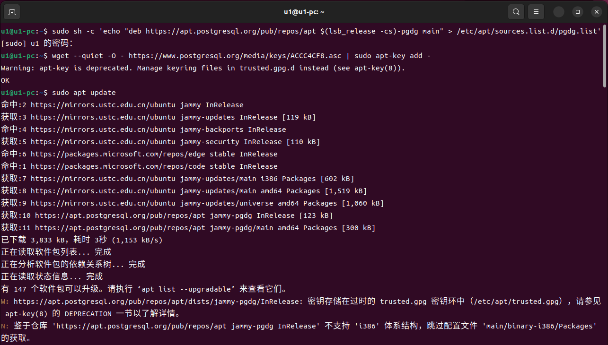
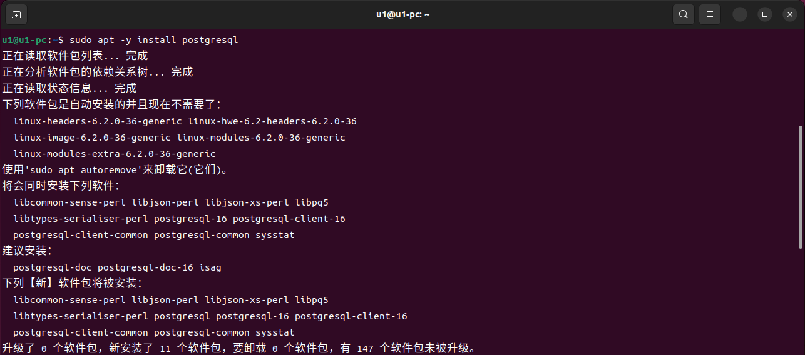
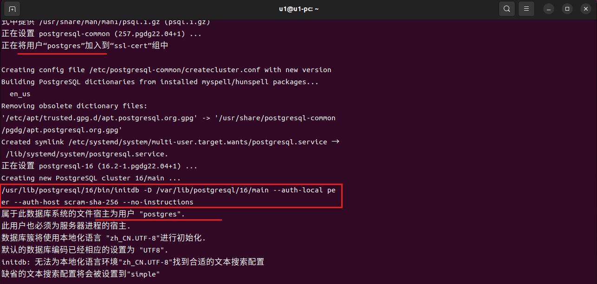
sudo systemctl status postgresql
# 备用
sudo systemctl start postgresql
sudo systemctl stop postgresql
sudo systemctl restart postgresql
sudo systemctl enable postgresql
# 版本检测
psql --version
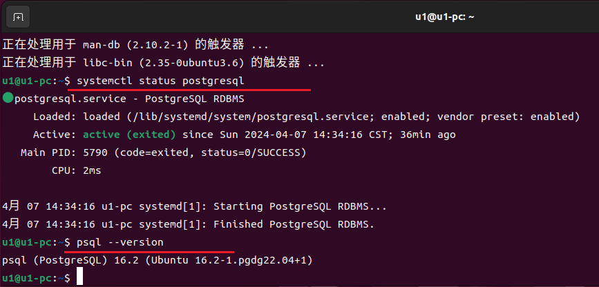
# 在终端输入下面的命令，进入 PostgreSQL Shell
sudo -u postgres psql
# 退出 PostgreSQL Shell
\q
# 列出所有数据库
\l
# 查询所有的数据库名称
SELECT datname FROM pg_database;
# 创建、删除数据库（该数据库会在 dify 项目中用到）
CREATE DATABASE dify;
DROP DATABASE dify;
# 修改超级用户 postgres 的密码
ALTER USER postgres PASSWORD 'u1sql';
# 验证修改超级用户 postgres 的密码是否修改成功
# 注意：退出 shell 之后重启一下服务，否则会报错。第一次没有重启服务，又改了一次……
\q
sudo systemctl restart postgresql
psql -h localhost -U postgres
# 如果只是执行简单的语句，你还可以这样
sudo -u postgres psql -c "\l"
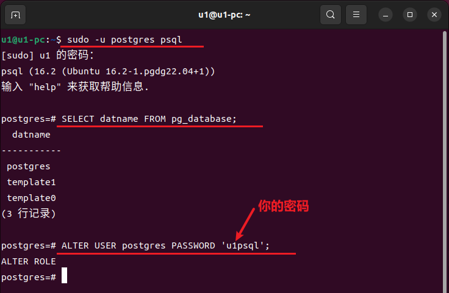
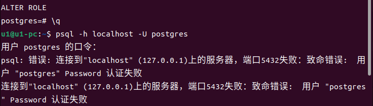
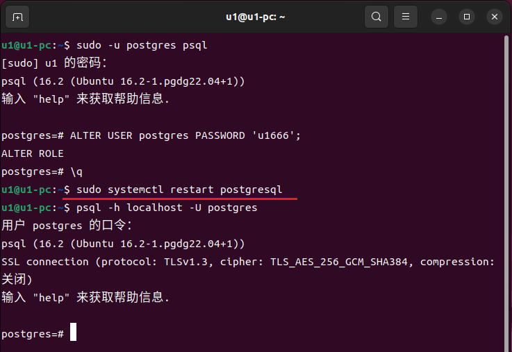
为了设置允许远程连接，需要修改两个文件，文件位置位于
# postgresql.conf
sudo chmod 777 postgresql.conf
# 找到 listen_addresses 并修改
listen_addresses = '*'
# pg_hba.conf
sudo chmod 777 pg_hba.conf
# 在文件末尾添加
host all all 0.0.0.0/0 md5
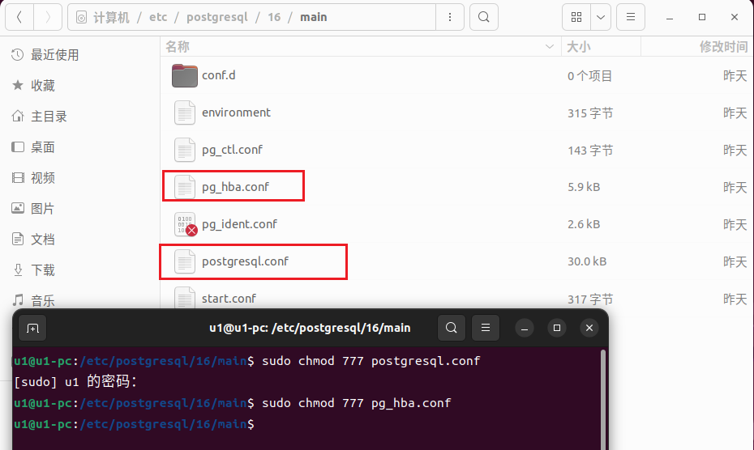
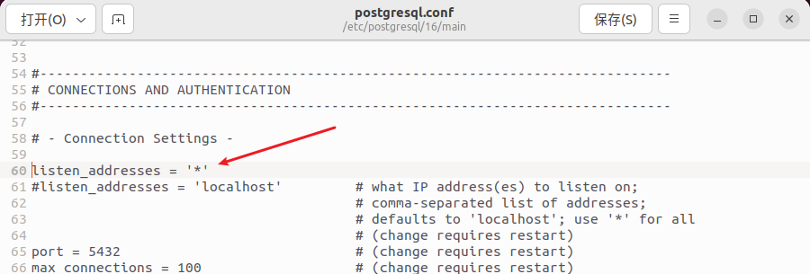
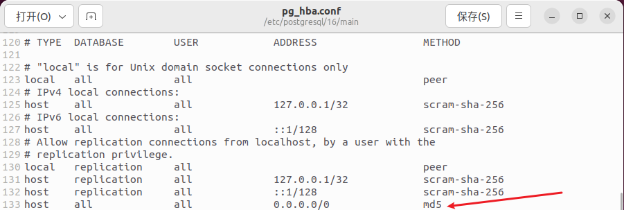
修改完之后记得重启一下服务，在测试一下远程连接
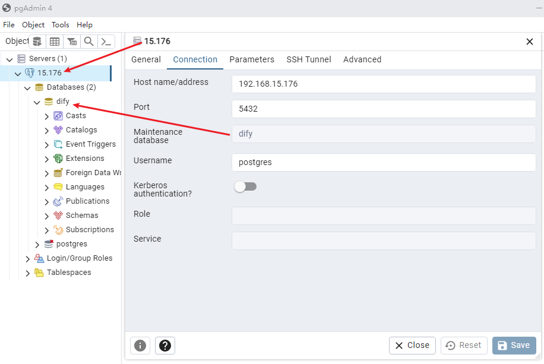